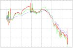

|
News
& Events
|
 |
|
17/09/09.
From November 16 to 20 the fifth international
meeting of the Wine Supply Chain
Council will
take place
in Mendoza. Actors
from all the industry sectors,
wineries, suppliers, winemakers, etc. will
participate in this meeting with
the purpose of presenting
the problems that affect the industry, making analisys and
developing research projects.
|
 |
|
10/09/2009.
The
"Logistics Benchmarking in the
Argentine Wine Industry" proyect has started. Bodegas
de Argentina and COVIAR collaborate
with CEAL in
the development of this project.
Through this project the best practices of the industry will be
captured and a global comparison of the logistics performance of the
participant wineries will be obtainded.
This is an iterative project through which different aspects will be
covered in each iteration, eg. lead-times, resources utilization
effectiveness, logistics costs, etc.
|
|  |
|
02/15/2009. First
temperature records of wine shipments from Argentina to the USA were
obtained and are currently being analyzed, in order to determine the
level of temperature variations on shipped wines.
|
 |
|
01/20/2009. CEAL
is now a member of the International Network on New Party Logistics
(IN-NPL),
an international network
of researchers and professionales in
logistics topics.
|
 |
|
01/12/2009. The
first Wine Supply Chain Council meeting on 2009 was held at Melbourne
(Australia). Several wineries were visited during the event, and
logistics problems were gathered and analyzed. New aspects were
introduced in the WSCC research agenda, such as grapes maturity
forecasting and weather aspects. Photos of the meeting are available here.
|
|
|
11/10/2008. Our Colleagues
from GeorgiaTech visited Argentina. Agreements with most important
wineries from Mendoza (the biggest wine region of Argentina) were
achieved, in order to start the temperature tracking on shipments to
USA. People from Norton, Lagarde, Peñaflor group, Navarro
Correas, Chandon, Valentín Bianchi
and
Salentein
wineries, among others, participated on the meeting. Bodegas de
Argentina, one of the biggest commercial chambers in the argentine wine
industry also took part of the talks and activities carried out. CEAL
was officially included in the Wine Supply Chain Council as a research
partner. Photos of the meeting are
available here.
|
|
|
07/21/2008. People
from CEAL was invited
to participate in the Wine Supply Chain Council meeting at Stellenbosh
(South Africa). Most important wineries from the wine region of
Stellenbosch were
visited as part of the council's activities. Research meetings
between both people from industry and researchers of the involved
institutions were carried out. Photos
of the meeting are
available here. Some press notes
were made about this meeting. |